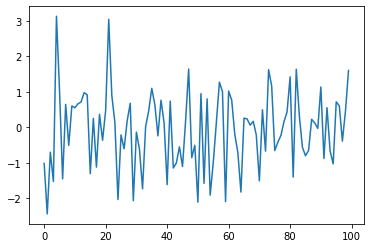
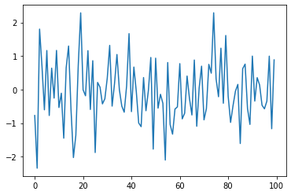
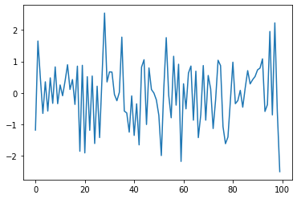
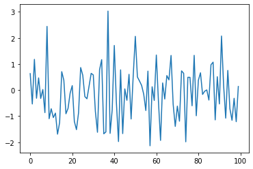
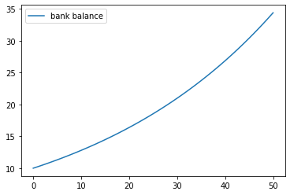

An Introductory Example#
Overview#
We’re now ready to start learning the Python language itself.
In this lab, we will write and then pick apart small Python programs.
The objective is to introduce you to basic Python syntax and data structures.
Deeper concepts will be covered in later labs.
You should have read the notes on getting started with Python before beginning this one.
The Task: Plotting a White Noise Process#
Suppose we want to simulate and plot the white noise process \(\epsilon_0, \epsilon_1, \ldots, \epsilon_T\), where each draw \(\epsilon_t\) is independent standard normal.
In other words, we want to generate figures that look something like this:

(Here \(t\) is on the horizontal axis and \(\epsilon_t\) is on the vertical axis.)
We’ll do this in several different ways, each time learning something more about Python.
We run the following command first, which helps ensure that plots appear in the notebook if you run it on your own machine.
%matplotlib inline
A module that was compiled using NumPy 1.x cannot be run in
NumPy 2.3.2 as it may crash. To support both 1.x and 2.x
versions of NumPy, modules must be compiled with NumPy 2.0.
Some module may need to rebuild instead e.g. with 'pybind11>=2.12'.
If you are a user of the module, the easiest solution will be to
downgrade to 'numpy<2' or try to upgrade the affected module.
We expect that some modules will need time to support NumPy 2.
Traceback (most recent call last): File "<frozen runpy>", line 198, in _run_module_as_main
File "<frozen runpy>", line 88, in _run_code
File "C:\Users\Miguel\anaconda3\Lib\site-packages\ipykernel_launcher.py", line 17, in <module>
app.launch_new_instance()
File "C:\Users\Miguel\anaconda3\Lib\site-packages\traitlets\config\application.py", line 992, in launch_instance
app.start()
File "C:\Users\Miguel\anaconda3\Lib\site-packages\ipykernel\kernelapp.py", line 711, in start
self.io_loop.start()
File "C:\Users\Miguel\anaconda3\Lib\site-packages\tornado\platform\asyncio.py", line 195, in start
self.asyncio_loop.run_forever()
File "C:\Users\Miguel\anaconda3\Lib\asyncio\base_events.py", line 607, in run_forever
self._run_once()
File "C:\Users\Miguel\anaconda3\Lib\asyncio\base_events.py", line 1922, in _run_once
handle._run()
File "C:\Users\Miguel\anaconda3\Lib\asyncio\events.py", line 80, in _run
self._context.run(self._callback, *self._args)
File "C:\Users\Miguel\anaconda3\Lib\site-packages\ipykernel\kernelbase.py", line 510, in dispatch_queue
await self.process_one()
File "C:\Users\Miguel\anaconda3\Lib\site-packages\ipykernel\kernelbase.py", line 499, in process_one
await dispatch(*args)
File "C:\Users\Miguel\anaconda3\Lib\site-packages\ipykernel\kernelbase.py", line 406, in dispatch_shell
await result
File "C:\Users\Miguel\anaconda3\Lib\site-packages\ipykernel\kernelbase.py", line 729, in execute_request
reply_content = await reply_content
File "C:\Users\Miguel\anaconda3\Lib\site-packages\ipykernel\ipkernel.py", line 411, in do_execute
res = shell.run_cell(
File "C:\Users\Miguel\anaconda3\Lib\site-packages\ipykernel\zmqshell.py", line 531, in run_cell
return super().run_cell(*args, **kwargs)
File "C:\Users\Miguel\anaconda3\Lib\site-packages\IPython\core\interactiveshell.py", line 3006, in run_cell
result = self._run_cell(
File "C:\Users\Miguel\anaconda3\Lib\site-packages\IPython\core\interactiveshell.py", line 3061, in _run_cell
result = runner(coro)
File "C:\Users\Miguel\anaconda3\Lib\site-packages\IPython\core\async_helpers.py", line 129, in _pseudo_sync_runner
coro.send(None)
File "C:\Users\Miguel\anaconda3\Lib\site-packages\IPython\core\interactiveshell.py", line 3266, in run_cell_async
has_raised = await self.run_ast_nodes(code_ast.body, cell_name,
File "C:\Users\Miguel\anaconda3\Lib\site-packages\IPython\core\interactiveshell.py", line 3445, in run_ast_nodes
if await self.run_code(code, result, async_=asy):
File "C:\Users\Miguel\anaconda3\Lib\site-packages\IPython\core\interactiveshell.py", line 3505, in run_code
exec(code_obj, self.user_global_ns, self.user_ns)
File "C:\Users\Miguel\AppData\Local\Temp\ipykernel_38824\352233182.py", line 1, in <module>
get_ipython().run_line_magic('matplotlib', 'inline')
File "C:\Users\Miguel\anaconda3\Lib\site-packages\IPython\core\interactiveshell.py", line 2414, in run_line_magic
result = fn(*args, **kwargs)
File "C:\Users\Miguel\anaconda3\Lib\site-packages\IPython\core\magics\pylab.py", line 99, in matplotlib
gui, backend = self.shell.enable_matplotlib(args.gui.lower() if isinstance(args.gui, str) else args.gui)
File "C:\Users\Miguel\anaconda3\Lib\site-packages\IPython\core\interactiveshell.py", line 3585, in enable_matplotlib
from matplotlib_inline.backend_inline import configure_inline_support
File "C:\Users\Miguel\anaconda3\Lib\site-packages\matplotlib_inline\__init__.py", line 1, in <module>
from . import backend_inline, config # noqa
File "C:\Users\Miguel\anaconda3\Lib\site-packages\matplotlib_inline\backend_inline.py", line 6, in <module>
import matplotlib
File "C:\Users\Miguel\anaconda3\Lib\site-packages\matplotlib\__init__.py", line 113, in <module>
from . import _api, _version, cbook, _docstring, rcsetup
File "C:\Users\Miguel\anaconda3\Lib\site-packages\matplotlib\rcsetup.py", line 27, in <module>
from matplotlib.colors import Colormap, is_color_like
File "C:\Users\Miguel\anaconda3\Lib\site-packages\matplotlib\colors.py", line 56, in <module>
from matplotlib import _api, _cm, cbook, scale
File "C:\Users\Miguel\anaconda3\Lib\site-packages\matplotlib\scale.py", line 22, in <module>
from matplotlib.ticker import (
File "C:\Users\Miguel\anaconda3\Lib\site-packages\matplotlib\ticker.py", line 138, in <module>
from matplotlib import transforms as mtransforms
File "C:\Users\Miguel\anaconda3\Lib\site-packages\matplotlib\transforms.py", line 49, in <module>
from matplotlib._path import (
---------------------------------------------------------------------------
AttributeError Traceback (most recent call last)
AttributeError: _ARRAY_API not found
---------------------------------------------------------------------------
ImportError Traceback (most recent call last)
Cell In[1], line 1
----> 1 get_ipython().run_line_magic('matplotlib', 'inline')
File ~\anaconda3\Lib\site-packages\IPython\core\interactiveshell.py:2414, in InteractiveShell.run_line_magic(self, magic_name, line, _stack_depth)
2412 kwargs['local_ns'] = self.get_local_scope(stack_depth)
2413 with self.builtin_trap:
-> 2414 result = fn(*args, **kwargs)
2416 # The code below prevents the output from being displayed
2417 # when using magics with decodator @output_can_be_silenced
2418 # when the last Python token in the expression is a ';'.
2419 if getattr(fn, magic.MAGIC_OUTPUT_CAN_BE_SILENCED, False):
File ~\anaconda3\Lib\site-packages\IPython\core\magics\pylab.py:99, in PylabMagics.matplotlib(self, line)
97 print("Available matplotlib backends: %s" % backends_list)
98 else:
---> 99 gui, backend = self.shell.enable_matplotlib(args.gui.lower() if isinstance(args.gui, str) else args.gui)
100 self._show_matplotlib_backend(args.gui, backend)
File ~\anaconda3\Lib\site-packages\IPython\core\interactiveshell.py:3585, in InteractiveShell.enable_matplotlib(self, gui)
3564 def enable_matplotlib(self, gui=None):
3565 """Enable interactive matplotlib and inline figure support.
3566
3567 This takes the following steps:
(...)
3583 display figures inline.
3584 """
-> 3585 from matplotlib_inline.backend_inline import configure_inline_support
3587 from IPython.core import pylabtools as pt
3588 gui, backend = pt.find_gui_and_backend(gui, self.pylab_gui_select)
File ~\anaconda3\Lib\site-packages\matplotlib_inline\__init__.py:1
----> 1 from . import backend_inline, config # noqa
2 __version__ = "0.1.6"
File ~\anaconda3\Lib\site-packages\matplotlib_inline\backend_inline.py:6
1 """A matplotlib backend for publishing figures via display_data"""
3 # Copyright (c) IPython Development Team.
4 # Distributed under the terms of the BSD 3-Clause License.
----> 6 import matplotlib
7 from matplotlib import colors
8 from matplotlib.backends import backend_agg
File ~\anaconda3\Lib\site-packages\matplotlib\__init__.py:113
109 from packaging.version import parse as parse_version
111 # cbook must import matplotlib only within function
112 # definitions, so it is safe to import from it here.
--> 113 from . import _api, _version, cbook, _docstring, rcsetup
114 from matplotlib.cbook import sanitize_sequence
115 from matplotlib._api import MatplotlibDeprecationWarning
File ~\anaconda3\Lib\site-packages\matplotlib\rcsetup.py:27
25 from matplotlib import _api, cbook
26 from matplotlib.cbook import ls_mapper
---> 27 from matplotlib.colors import Colormap, is_color_like
28 from matplotlib._fontconfig_pattern import parse_fontconfig_pattern
29 from matplotlib._enums import JoinStyle, CapStyle
File ~\anaconda3\Lib\site-packages\matplotlib\colors.py:56
54 import matplotlib as mpl
55 import numpy as np
---> 56 from matplotlib import _api, _cm, cbook, scale
57 from ._color_data import BASE_COLORS, TABLEAU_COLORS, CSS4_COLORS, XKCD_COLORS
60 class _ColorMapping(dict):
File ~\anaconda3\Lib\site-packages\matplotlib\scale.py:22
20 import matplotlib as mpl
21 from matplotlib import _api, _docstring
---> 22 from matplotlib.ticker import (
23 NullFormatter, ScalarFormatter, LogFormatterSciNotation, LogitFormatter,
24 NullLocator, LogLocator, AutoLocator, AutoMinorLocator,
25 SymmetricalLogLocator, AsinhLocator, LogitLocator)
26 from matplotlib.transforms import Transform, IdentityTransform
29 class ScaleBase:
File ~\anaconda3\Lib\site-packages\matplotlib\ticker.py:138
136 import matplotlib as mpl
137 from matplotlib import _api, cbook
--> 138 from matplotlib import transforms as mtransforms
140 _log = logging.getLogger(__name__)
142 __all__ = ('TickHelper', 'Formatter', 'FixedFormatter',
143 'NullFormatter', 'FuncFormatter', 'FormatStrFormatter',
144 'StrMethodFormatter', 'ScalarFormatter', 'LogFormatter',
(...)
150 'MultipleLocator', 'MaxNLocator', 'AutoMinorLocator',
151 'SymmetricalLogLocator', 'AsinhLocator', 'LogitLocator')
File ~\anaconda3\Lib\site-packages\matplotlib\transforms.py:49
46 from numpy.linalg import inv
48 from matplotlib import _api
---> 49 from matplotlib._path import (
50 affine_transform, count_bboxes_overlapping_bbox, update_path_extents)
51 from .path import Path
53 DEBUG = False
ImportError: numpy.core.multiarray failed to import
Version 1#
Here are a few lines of code that perform the task we set
import numpy as np
import matplotlib.pyplot as plt
ϵ_values = np.random.randn(100)
plt.plot(ϵ_values)
plt.show()

Let’s break this program down and see how it works.
Imports#
The first two lines of the program import functionality from external code libraries.
The first line imports NumPy, a favorite Python package for tasks like
working with arrays (vectors and matrices)
common mathematical functions like
cosandsqrtgenerating random numbers
linear algebra, etc.
After import numpy as np we have access to these attributes via the
syntax np.attribute.
Here’s two more examples
np.sqrt(4)
2.0
np.log(4)
1.3862943611198906
We could also use the following syntax:
import numpy
numpy.sqrt(4)
2.0
But the former method (using the short name np) is convenient and more
standard.
Why So Many Imports?#
Python programs typically require several import statements.
The reason is that the core language is deliberately kept small, so that it’s easy to learn and maintain.
When you want to do something interesting with Python, you almost always need to import additional functionality.
Packages#
As stated above, NumPy is a Python package.
Packages are used by developers to organize code they wish to share.
In fact, a package is just a directory containing
files with Python code — called modules in Python speak
possibly some compiled code that can be accessed by Python (e.g., functions compiled from C or FORTRAN code)
a file called
__init__.pythat specifies what will be executed when we typeimport package_name
In fact, you can find and explore the directory for NumPy on your computer easily enough if you look around.
On this machine, it’s located in
anaconda3/lib/python3.7/site-packages/numpy
Subpackages#
Consider the line ϵ_values = np.random.randn(100).
Here np refers to the package NumPy, while random is a
subpackage of NumPy.
Subpackages are just packages that are subdirectories of another package.
Importing Names Directly#
Recall this code that we saw above
import numpy as np
np.sqrt(4)
2.0
Here’s another way to access NumPy’s square root function
from numpy import sqrt
sqrt(4)
2.0
This is also fine.
The advantage is less typing if we use sqrt often in our code.
The disadvantage is that, in a long program, these two lines might be separated by many other lines.
Then it’s harder for readers to know where sqrt came from, should
they wish to.
Random Draws#
Returning to our program that plots white noise, the remaining three lines after the import statements are
ϵ_values = np.random.randn(100)
plt.plot(ϵ_values)
plt.show()

The first line generates 100 (quasi) independent standard normals and
stores them in ϵ_values.
The next two lines genererate the plot.
We can and will look at various ways to configure and improve this plot below.
Alternative Implementations#
Let’s try writing some alternative versions of our first program, which plotted IID draws from the normal distribution.
The programs below are less efficient than the original one, and hence somewhat artificial.
But they do help us illustrate some important Python syntax and semantics in a familiar setting.
A Version with a For Loop#
Here’s a version that illustrates for loops and Python lists.
ts_length = 100
ϵ_values = [] # empty list
for i in range(ts_length):
e = np.random.randn()
ϵ_values.append(e)
plt.plot(ϵ_values)
plt.show()

In brief,
The first line sets the desired length of the time series.
The next line creates an empty list called
ϵ_valuesthat will store the \(\epsilon_t\) values as we generate them.The statement
# empty listis a comment, and is ignored by Python’s interpreter.The next three lines are the
forloop, which repeatedly draws a new random number \(\epsilon_t\) and appends it to the end of the listϵ_values.The last two lines generate the plot and display it to the user.
Let’s study some parts of this program in more detail.
Lists#
Consider the statement ϵ_values = [], which creates an empty list.
Lists are a native Python data structure used to group a collection of objects.
For example, try
x = [10, 'foo', False]
type(x)
list
The first element of x is an
integer,
the next is a
string,
and the third is a Boolean value.
When adding a value to a list, we can use the syntax
list_name.append(some_value)
x
[10, 'foo', False]
x.append(2.5)
x
[10, 'foo', False, 2.5]
Here append() is what’s called a method, which is a function
“attached to” an object—in this case, the list x.
We’ll learn all about methods later on, but just to give you some idea,
Python objects such as lists, strings, etc. all have methods that are used to manipulate the data contained in the object.
String objects have string methods, list objects have list methods, etc.
Another useful list method is pop()
x
[10, 'foo', False, 2.5]
x.pop()
2.5
x
[10, 'foo', False]
Lists in Python are zero-based (as in C, Java or Go), so the first
element is referenced by x[0]
x[0] # first element of x
10
x[1] # second element of x
'foo'
The For Loop#
Now let’s consider the for loop from
the program above, which
was
for i in range(ts_length):
e = np.random.randn()
ϵ_values.append(e)
Python executes the two indented lines ts_length times before moving
on.
These two lines are called a code block, since they comprise the
“block” of code that we are looping over.
Unlike most other languages, Python knows the extent of the code block only from indentation.
In our program, indentation decreases after line ϵ_values.append(e),
telling Python that this line marks the lower limit of the code block.
More on indentation below—for now, let’s look at another example of
a for loop
animals = ['dog', 'cat', 'bird']
for animal in animals:
print("The plural of " + animal + " is " + animal + "s")
The plural of dog is dogs
The plural of cat is cats
The plural of bird is birds
This example helps to clarify how the for loop works: When we execute
a loop of the form
for variable_name in sequence:
<code block>
The Python interpreter performs the following:
For each element of the
sequence, it “binds” the namevariable_nameto that element and then executes the code block.
The sequence object can in fact be a very general object, as we’ll
see soon enough.
A Comment on Indentation#
In discussing the for loop, we explained that the code blocks being
looped over are delimited by indentation.
In fact, in Python, all code blocks (i.e., those occurring inside loops, if clauses, function definitions, etc.) are delimited by indentation.
Thus, unlike most other languages, whitespace in Python code affects the output of the program.
Once you get used to it, this is a good thing: It
forces clean, consistent indentation, improving readability
removes clutter, such as the brackets or end statements used in other languages
On the other hand, it takes a bit of care to get right, so please remember:
The line before the start of a code block always ends in a colon
for i in range(10):if x > y:while x < 100:etc., etc.
All lines in a code block must have the same amount of indentation.
The Python standard is 4 spaces, and that’s what you should use.
While Loops#
The for loop is the most common technique for iteration in Python.
But, for the purpose of illustration, let’s modify
the program above to use
a while loop instead.
ts_length = 100
ϵ_values = []
i = 0
while i < ts_length:
e = np.random.randn()
ϵ_values.append(e)
i = i + 1
plt.plot(ϵ_values)
plt.show()

Note that
the code block for the
whileloop is again delimited only by indentationthe statement
i = i + 1can be replaced byi += 1
Another Application#
Let’s do one more application before we turn to exercises.
In this application, we plot the balance of a bank account over time.
There are no withdraws over the time period, the last date of which is denoted by \(T\).
The initial balance is \(b_0\) and the interest rate is \(r\).
The balance updates from period \(t\) to \(t+1\) according to
In the code below, we generate and plot the sequence \(b_0, b_1, \ldots, b_T\) generated by (1).
Instead of using a Python list to store this sequence, we will use a NumPy array.
r = 0.025 # interest rate
T = 50 # end date
b = np.empty(T+1) # an empty NumPy array, to store all b_t
b[0] = 10 # initial balance
for t in range(T):
b[t+1] = (1 + r) * b[t]
plt.plot(b, label='bank balance')
plt.legend()
plt.show()

The statement b = np.empty(T+1) allocates storage in memory for T+1
(floating point) numbers.
These numbers are filled in by the for loop.
Allocating memory at the start is more efficient than using a Python
list and append, since the latter must repeatedly ask for storage
space from the operating system.
Notice that we added a legend to the plot — a feature you will be asked to use in the exercises.